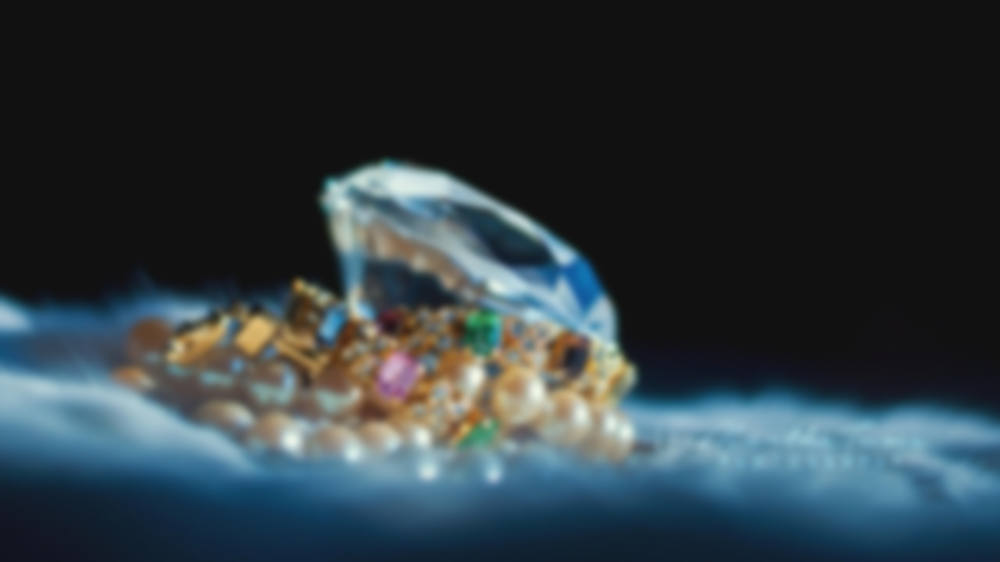

Welcome to Mangata and Gallo
We specialize in crafting exquisite jewelry to capture life's most cherished moments. From engagements to weddings and anniversaries, our designs evoke the essence of these significant milestones. Our Austin-based storefront is more than a jewelry store; it's a reflection of passion, creativity, and timeless elegance. Led by Mariana, our owner and lead designer, our pieces seamlessly blend artistry and craftsmanship. Discover our collections, each piece a love-infused masterpiece, whether online or in-store. Join us on this journey of creating enduring treasures that encapsulate life's beauty.